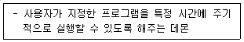
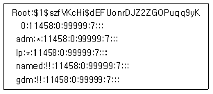
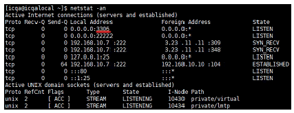
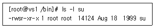
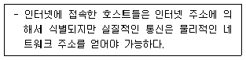
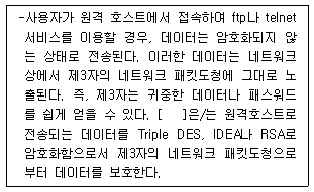
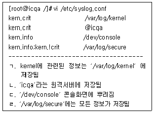
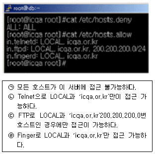
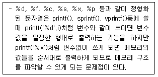

인터넷보안전문가-2급 (2021-04-11 기출문제)
1과목: 정보보호개론
1. 공격 유형 중 마치 다른 송신자로부터 정보가 수신된 것처럼 꾸미는 것으로, 시스템에 불법적으로 접근하여 오류의 정보를 정확한 정보인 것처럼 속이는 행위를 뜻하는 것은?
- 차단(Interruption)
- 위조(Fabrication)
- 변조(Modification)
- 가로채기(Interception)
(정답률: 75%)

2. 다음 중 유형이 다른 보안 알고리즘은?
- SEED 알고리즘
- RSA 알고리즘
- Rabin 알고리즘
- ECC 알고리즘
(정답률: 57%)
3. 암호의 목적에 대한 설명 중 옳지 않은 것은?
- 비밀성(Confidentiality) : 허가된 사용자 이외 암호문 해독 불가
- 무결성(Integrity) : 메시지 변조 방지
- 접근 제어(Access Control) : 프로토콜 데이터 부분의 접근제어
- 부인봉쇄(Non-Repudiation) : 송수신 사실 부정방지
(정답률: 62%)
4. IP 계층에서 보안 서비스를 제공하기 위한 IPsec에서 제공되는 보안 서비스로 옳지 않은 것은?
- 부인방지 서비스
- 무연결 무결성 서비스
- 데이터 원천 인증
- 기밀성 서비스
(정답률: 50%)
5. 이산대수 문제에 바탕을 두며 인증메시지에 비밀 세션키를 포함하여 전달 할 필요가 없고 공개키 암호화 방식의 시초가 된 키 분배 알고리즘은?
- RSA 알고리즘
- DSA 알고리즘
- MD-5 해쉬 알고리즘
- Diffie-Hellman 알고리즘
(정답률: 62%)
6. 공인인증서란 인터넷상에서 발생하는 모든 전자거래를 안심하고 사용할 수 있도록 해주는 사이버신분증이다. 공인인증서에 반드시 포함되어야 하는 사항으로 옳지 않은 것은?
- 가입자 이름
- 유효 기간
- 일련 번호
- 용도
(정답률: 72%)
7. Kerberos의 용어 설명 중 옳지 않은 것은?
- AS : Authentication Server
- KDC : Kerberos 인증을 담당하는 데이터 센터
- TGT : Ticket을 인증하기 위해서 이용되는 Ticket
- Ticket : 인증을 증명하는 키
(정답률: 65%)
8. 안전한 전자지불을 위하여 수립된 보안 대책과 사용 용도에 대한 연결이 옳지 않은 것은?
- PGP(Pretty Good Privacy) - 메일 보안 시스템
- PEM(Privacy-enhanced Electronic Mail) - 보안 메일의 IETF 표준
- Kerberos - 사용자 인증
- SNMPv2 - Web 문서 관리
(정답률: 65%)
9. 다음은 컴퓨터실 출입 통제를 위한 생체 측정 방식이다. 이 중 보안에 가장 취약한 생체 측정 방식은?
- 지문 인식
- 망막 인식
- 음성 인식
- 얼굴 인식
(정답률: 74%)
10. 인적자원에 대한 보안 위협을 최소화하기 위한 방법으로 옳지 않은 것은?
- 기밀 정보를 열람해야 하는 경우에는 반드시 정보 담당자 한 명에게만 전담시키고 폐쇄된 곳에서 정보를 열람 시켜 정보 유출을 최대한 방지한다.
- 기밀 정보를 처리할 때는 정보를 부분별로 나누어 여러 명에게 나누어 업무를 처리하게 함으로서, 전체 정보를 알 수 없게 한다.
- 보안 관련 직책이나 서버 운영 관리자는 순환 보직제를 실시하여 장기 담당으로 인한 정보 변조나 유출을 막는다.
- 프로그래머가 운영자의 직책을 중임하게 하거나 불필요한 외부 인력과의 접촉을 최소화 한다.
(정답률: 56%)
2과목: 운영체제
11. 다음 명령어 중에서 데몬들이 커널상에서 작동되고 있는지 확인하기 위해 사용하는 것은?
- domon
- cs
- cp
- ps
(정답률: 68%)
12. 다음이 설명하는 Linux 시스템의 데몬은?

- crond
- atd
- gpm
- amd
(정답률: 60%)
13. Linux에서 '/dev' 디렉터리에 관한 설명으로 옳지 않은 것은?
- 이 디렉터리는 물리적 용량을 갖지 않는 가상 디렉터리이다.
- 시스템의 각종 장치들에 접근하기 위한 디바이스 드라이버들이 저장되어 있다.
- 이 디렉터리에는 커널로 로딩 가능한 커널 모듈들이 저장되어 있다.
- 대표적으로 하드디스크 드라이브, USB, CD-ROM 그리고 루프 백 장치 등이 존재한다.
(정답률: 41%)
14. 다음 명령어 중에서 시스템의 메모리 상태를 보여주는 명령어는?
- mkfs
- free
- ps
- shutdown
(정답률: 61%)
15. Linux의 기본 명령어 ′man′의 의미는?
- 명령어에 대한 사용법을 알고 싶을 때 사용하는 명령어
- 윈도우나 쉘을 빠져 나올 때 사용하는 명령어
- 지정한 명령어가 어디에 있는지 경로를 표시
- 기억된 명령어를 불러내는 명령어
(정답률: 66%)
16. DHCP(Dynamic Host Configuration Protocol) Scope 범위 혹은 주소 풀(Address Pool)을 만드는데 주의할 점에 속하지 않는 것은?
- 모든 DHCP 서버는 최소한 하나의 DHCP 범위를 가져야 한다.
- DHCP 주소 범위에서 정적으로 할당된 주소가 있다면 해당 주소를 제외해야 한다.
- 네트워크에 여러 DHCP 서버를 운영할 경우에는 DHCP 범위가 겹치지 않아야 한다.
- 하나의 서브넷에는 여러 개의 DHCP 범위가 사용될 수 있다.
(정답률: 56%)
17. DNS(Domain Name System) 서버를 처음 설치하고 가장 먼저 만들어야 하는 데이터베이스 레코드는?
- CNAME(Canonical Name)
- HINFO(Host Information)
- PTR(Pointer)
- SOA(Start Of Authority)
(정답률: 54%)
18. 파일의 허가 모드가 ′-rwxr---w-′이다. 다음 설명 중 옳지 않은 것은?
- 소유자는 읽기 권한, 쓰기 권한, 실행 권한을 갖는다.
- 동일한 그룹에 속한 사용자는 읽기 권한만을 갖는다.
- 다른 모든 사용자는 쓰기 권한 만을 갖는다.
- 동일한 그룹에 속한 사용자는 실행 권한을 갖는다.
(정답률: 64%)
19. Linux 시스템의 shadow 파일 내용에 대한 설명으로 올바른 것은?

- lp에서 ′*′은 로그인 쉘을 갖고 있으며, 시스템에 누구나 로그인할 수 있음을 의미한다.
- gdm에서 ′!!′은 로그인 쉘을 갖고 있지만 누구도 계정을 통해서 로그인할 수 없도록 계정이 잠금 상태라는 것을 의미한다.
- 로그인 계정이 아닌 시스템 계정은 named와 gdm 이다.
- root의 암호는 11458 이다.
(정답률: 57%)
20. Linux 구조 중 다중 프로세스·다중 사용자와 같은 주요 기능을 지원·관리하는 것은?
- Kernel
- Disk Manager
- Shell
- X Window
(정답률: 67%)
21. NTFS의 주요 기능에 대한 설명 중 옳지 않은 것은?
- 파일 클러스터를 추적하기 위해 B-Tree 디렉터리 개념을 사용한다.
- 서버 관리자가 ACL을 이용하여 누가 어떤 파일만 액세스할 수 있는지 등을 통제할 수 있다.
- 교체용 디스크와 고정 디스크 모두에 대해 데이터 보안을 지원한다.
- FAT 보다 대체적으로 빠른 속도를 지원한다.
(정답률: 47%)
22. 파일이 생성된 시간을 변경하기 위해 사용하는 Linux 명령어는?
- chown
- chgrp
- touch
- chmod
(정답률: 66%)
23. Windows Server에서 지원하는 PPTP(Point to Point Tunneling Protocol)에 대한 설명으로 옳지 않은 것은?
- PPTP 헤드 압축을 지원한다.
- Microsoft에서 제안한 VPN Protocol 이다.
- PPP 암호화를 지원한다.
- IP 기반 네트워크에서 사용가능하다.
(정답률: 41%)
24. Linux에서 ′netstat -an′ 명령으로 시스템을 확인한 결과 다음과 같은 결과가 나왔다. 아래 ′3306′번 포트는 어떤 데몬이 가동될 때 열리는 포트인가? (단, 시스템의 기본 포트는 Well-Known 포트를 사용한다.)

- MySQL
- DHCP
- Samba
- Backdoor
(정답률: 64%)
25. Linux 시스템이 부팅될 때 나오는 메시지가 저장된 로그 파일의 경로와 명칭으로 올바른 것은?
- /var/log/boot
- /var/log/dmesg
- /var/log/message
- /var/log/secure
(정답률: 48%)
26. Linux 콘솔 상에서 네트워크 어댑터 ′eth0′을 ′ifconfig′ 명령어로 ′192.168.1.1′ 이라는 주소로 사용하고 싶을 때 올바른 방법은?
- ifconfig eth0 192.168.1.1 activate
- ifconfig eth0 192.168.1.1 deactivate
- ifconfig eth0 192.168.1.1 up
- ifconfig eth0 192.168.1.1 down
(정답률: 57%)
27. 이미 내린 shutdown 명령을 취소하기 위한 명령은?
- shutdown –r
- shutdown -h
- cancel
- shutdown –c
(정답률: 72%)
28. Linux에서 su 명령의 사용자 퍼미션을 확인한 결과 ′rws′ 이다. 아래와 같이 사용자 퍼미션에 ′s′ 라는 속성을 부여하기 위한 명령어는?

- chmod 755 su
- chmod 0755 su
- chmod 4755 su
- chmod 6755 su
(정답률: 60%)
29. Linux에서 root 유저로 로그인 한 후 ′cp -rf /etc/* ~/temp′ 라는 명령으로 복사를 하였는데, 여기서 ′~′ 문자가 의미하는 뜻은?
- /home 디렉터리
- /root 디렉터리
- root 유저의 home 디렉터리
- 현재 디렉터리의 하위라는 의미
(정답률: 57%)
30. 현재 Linux 서버에 접속된 모든 사용자에게 메시지를 전송하는 명령은?
- wall
- message
- broadcast
- bc
(정답률: 44%)
3과목: 네트워크
31. SNMP(Simple Network Management Protocol)에 대한 설명으로 옳지 않은 것은?
- RFC(Request For Comment) 1157에 명시되어 있다.
- 현재의 네트워크 성능, 라우팅 테이블, 네트워크를 구성하는 값들을 관리한다.
- TCP 세션을 사용한다.
- 상속이 불가능하다.
(정답률: 55%)
32. IPv4에 비하여 IPv6이 개선된 설명으로 잘못된 것은?
- 128bit 구조를 가지기 때문에 기존의 IPv4 보다 더 많은 노드를 가질 수 있다.
- 전역방송(Broad Cast)이 가능하다.
- IPv6에서는 확장이 자유로운 가변길이 변수로 이루어진 옵션 필드 부분 때문에 융통성이 발휘된다.
- IPv6에서는 Loose Routing과 Strict Routing의 두 가지 옵션을 가지고 있다.
(정답률: 56%)
33. IPv6 프로토콜의 구조는?
- 32bit
- 64bit
- 128bit
- 256bit
(정답률: 76%)
34. 다음과 같은 일을 수행하는 프로토콜은?

- DHCP(Dynamic Host Configuration Protocol)
- IP(Internet Protocol)
- RIP(Routing Information Protocol)
- ARP(Address Resolution Protocol)
(정답률: 59%)
35. OSI 7 Layer에서 암호/복호, 인증, 압축 등의 기능이 수행되는 계층은?
- Transport Layer
- Datalink Layer
- Presentation Layer
- Application Layer
(정답률: 60%)
36. ′서비스′ - ′Well-Known 포트′ - ′프로토콜′의 연결이 옳지 않은 것은?
- FTP - 21 – TCP
- SMTP - 25 - TCP
- DNS - 53 – TCP
- SNMP - 191 - TCP
(정답률: 58%)
37. ICMP(Internet Control Message Protocol)의 메시지 타입으로 옳지 않은 것은?
- Source Quench
- Port Destination Unreachable
- Echo Request, Echo Reply
- Timestamp Request, Timestamp Reply
(정답률: 39%)
38. 시작 비트로 시작하여, 데이터 비트, 오류검출 비트, 종료 비트로 프레임이 만들어지는 전송 프로토콜은?
- 동기 직렬 전송
- 비동기 직렬 전송
- 병렬 전송
- 모뎀 전송
(정답률: 46%)
39. TCP/IP 프로토콜에 관한 설명 중 옳지 않은 것은?
- 데이터 전송 방식을 결정하는 프로토콜로써 TCP와 UDP가 존재한다.
- TCP는 연결지향형 접속 형태를 이루고, UDP는 비 연결형 접속 형태를 이루는 전송 방식이다.
- DNS는 UDP만을 사용하여 통신한다.
- IP는 TCP나 UDP형태의 데이터를 인터넷으로 라우팅하기 위한 프로토콜로 볼 수 있다.
(정답률: 64%)
40. TCP/IP 프로토콜을 이용해 클라이언트가 서버의 특정 포트에 접속하려고 할 때 서버가 해당 포트를 열고 있지 않다면 응답 패킷의 코드 비트에 특정 비트를 설정한 후 보내 접근할 수 없음을 통지하게 된다. 다음 중 연결 문제 등의 상황 처리를 위한 특별한 초기화용 제어 비트는?
- SYN
- ACK
- FIN
- RST
(정답률: 50%)
41. 서브넷 마스크에 대한 설명으로 올바른 것은?
- DNS 데이터베이스를 관리하고 IP Address를 DNS의 이름과 연결한다.
- IP Address에 대한 네트워크를 분류 또는 구분한다.
- TCP/IP의 자동설정에 사용되는 프로토콜로서 정적, 동적 IP Address를 지정하고 관리한다.
- 서로 다른 네트워크를 연결할 때 네트워크 사이를 연결하는 장치이다.
(정답률: 69%)
42. TCP/IP 프로토콜을 이용한 네트워크상에서 병목현상(Bottleneck)이 발생하는 이유로 가장 옳지 않은 것은?
- 다수의 클라이언트가 동시에 호스트로 접속하여 다량의 데이터를 송/수신할 때
- 불법 접근자가 악의의 목적으로 대량의 불량 패킷을 호스트로 계속 보낼 때
- 네트워크에 연결된 호스트 중 다량의 질의를 할 때
- 호스트와 연결된 클라이언트 전체를 포함하는 방화벽 시스템이 설치되어 있을 때
(정답률: 58%)
43. IPv4 Address에 관한 설명 중 옳지 않은 것은?
- IP Address는 32bit 구조를 가지고 A, B, C, D 네 종류의 Class로 구분한다.
- 127.0.0.1은 루프 백 테스트를 위한 IP Address라고 할 수 있다.
- B Class는 중간 규모의 네트워크를 위한 주소 Class로 네트워크 ID는 128~191 사이의 숫자로 시작한다.
- D Class는 멀티캐스트용으로 사용된다.
(정답률: 53%)
44. 패킷(Packet)에 있는 정보로 옳지 않은 것은?
- 출발지 IP Address
- TCP 프로토콜 종류
- 전송 데이터
- 목적지 IP Address
(정답률: 60%)
45. Media Access Control 프로토콜과 Logical Link Control 프로토콜은 OSI 7 Layer 중 몇 번째 계층에 속하는가?
- 1 계층
- 2 계층
- 3 계층
- 4 계층
(정답률: 53%)
4과목: 보안
46. SSL(Secure Sockets Layer) 프로토콜에서 분할, 압축, 암호 기능을 수행하는 서브 계층은?
- SSL 핸드 세이트 계층
- SSL Change Cipher Spec Protocol
- SSL Alert Protocol
- SSL Record Protocol
(정답률: 39%)
47. PGP(Pretty Good Privacy)에서 지원하지 못하는 기능은?
- 메시지 인증
- 수신 부인방지
- 사용자 인증
- 송신 부인방지
(정답률: 51%)
48. 침입 탐지 시스템을 비정상적인 침입탐지 기법과 오용탐지 기법으로 구분할 경우, 오용탐지기법은?
- 상태 전이 분석
- 행위 측정 방식들의 결합
- 통계적인 방법
- 특징 추출
(정답률: 41%)
49. 서비스 거부 공격(Denial of Service)의 특징으로 옳지 않은 것은?
- 공격을 통해 시스템의 정보를 몰래 빼내가거나, 루트 권한을 획득할 수 있다.
- 시스템의 자원을 부족하게 하여 원래 의도된 용도로 사용하지 못하게 하는 공격이다.
- 다수의 시스템을 통한 DoS 공격을 DDoS(Distributed DoS)라고 한다.
- 라우터, 웹, 전자 우편, DNS 서버 등 모든 네트워크 장비를 대상으로 이루어질 수 있다.
(정답률: 65%)
50. 다음 빈칸 [ ]에 들어갈 용어는?

- SSL(Secure Socket Layer)
- Nessus
- HostSentry
- SSH(Secure Shell)
(정답률: 60%)
51. SET(Secure Electronic Transaction)에 대한 설명으로 옳지 않은 것은?
- MasterCard사의 SEPP와 Visa사의 STT가 결합된 형태이다.
- RSA Date Security사의 암호기술을 기반으로 한 프로토콜이다.
- 메시지의 암호화, 전자증명서, 디지털서명 등의 기능이 있다.
- 비공개키 암호를 사용하여 안전성을 보장해 준다.
(정답률: 45%)
52. IP Spoofing의 과정 중 포함되지 않는 것은?
- 공격자의 호스트로부터 신뢰받는 호스트에 SYN-Flooding 공격으로 상대방 호스트를 무력화 시킨다.
- 신뢰받는 호스트와 공격하려던 타겟호스트간의 패킷교환 순서를 알아본다.
- 신뢰받는 호스트에서 타겟호스트로 가는 패킷을 차단하기 위해 타겟호스트에 Flooding 과 같은 공격을 시도한다.
- 패킷교환 패턴을 파악한 후 신뢰받는 호스트에서 보낸 패킷처럼 위장하여 타겟호스트에 패킷을 보낸다.
(정답률: 40%)
53. 다음과 같은 ′syslog.conf′ 파일의 일부분이 있다. 이 ′syslog.conf′ 파일을 보고 커널에 관련된 하드웨어 부분의 에러인 임계에러(crit)는 어떤 로그가 저장이 되는지 올바르게 설명한 것은?

- ㄱ,ㄴ,ㄷ
- ㄱ,ㄴ,ㄹ
- ㄱ,ㄷ,ㄹ
- ㄴ,ㄷ,ㄹ
(정답률: 40%)
54. 아래 TCP_Wrapper 설정 내용으로 올바른 것은?

- ㉠, ㉢
- ㉡, ㉣
- ㉠, ㉡, ㉢
- ㉡, ㉢, ㉣
(정답률: 51%)
55. 웹 해킹의 한 종류인 SQL Injection 공격은 조작된 SQL 질의를 통하여 공격자가 원하는 SQL구문을 실행하는 기법이다. 이를 예방하기 위한 방법으로 옳지 않은 것은?
- 에러 감시와 분석을 위해 SQL 에러 메시지를 웹상에 상세히 출력한다.
- 입력 값에 대한 검증을 실시한다.
- SQL 구문에 영향을 미칠 수 있는 입력 값은 적절하게 변환한다.
- SQL 및 스크립트 언어 인터프리터를 최신 버전으로 유지한다.
(정답률: 53%)
56. 라우터에 포함된 SNMP(Simple Network Management Protocol) 서비스의 기본 설정을 이용한 공격들이 많다. 이를 방지하기 위한 SNMP 보안 설정 방법으로 옳지 않은 것은?
- 꼭 필요한 경우가 아니면 읽기/쓰기 권한을 설정하지 않는다.
- 규칙적이고 통일성이 있는 커뮤니티 값을 사용한다.
- ACL을 적용하여 특정 IP Address를 가진 경우만 SNMP 서비스에 접속할 수 있도록 한다.
- SNMP를 TFTP와 함께 사용하는 경우, ′snmp-server tftp-server-list′ 명령으로 특정 IP Address만이 서비스에 접속할 수 있게 한다.
(정답률: 56%)
57. Router에서는 IP 및 패킷을 필터링 하기 위한 Access Control List를 사용할 때 주의사항으로 올바른 것은?
- 라우터에 연산 부담을 덜기 위하여 상세하고, 큰 용량의 ACL을 유지하여야 한다.
- 시스코 라우터는 입력 트래픽 보다 출력 트래픽에 ACL을 적용하는 것이 효율 적이다.
- 라우터 트래픽 감소를 위해 Netflow을 함께 작동 시킨다.
- ACL을 이용한 출력 트래픽 필터링은 위조된 IP가 유출되는 것을 방지한다.
(정답률: 39%)
58. 스푸핑 공격의 한 종류인 스위치 재밍(Switch Jamming) 공격에 대한 순차적 내용으로 옳지 않은 것은?
- 스위치 허브의 주소 테이블에 오버 플로우가 발생하게 만든다.
- 스위치가 모든 네트워크 포트로 브로드 캐스팅하게 만든다.
- 오버 플로우를 가속화하기 위하여 MAC 주소를 표준보다 더 큰 값으로 위조하여 스위치에 전송한다.
- 테이블 관리 기능을 무력화 하고 패킷 데이터를 가로챈다.
(정답률: 51%)
59. 라우터 보안의 위협 요소로 옳지 않은 것은?
- 도청 및 세션 재전송
- 위장 및 서비스 거부 공격
- 비인가된 접속 및 사용자 암호 유출
- 재라우팅 및 세션 하이재킹
(정답률: 44%)
60. 다음에서 설명하는 것은?

- Sniffing
- IP Spoofing
- Race Condition
- Format String Bug
(정답률: 58%)